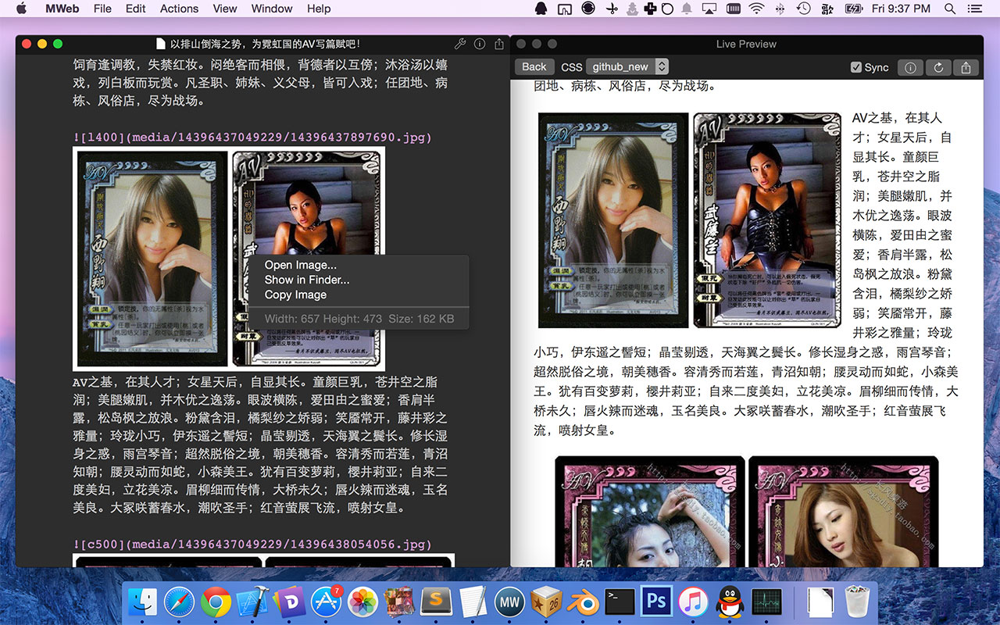
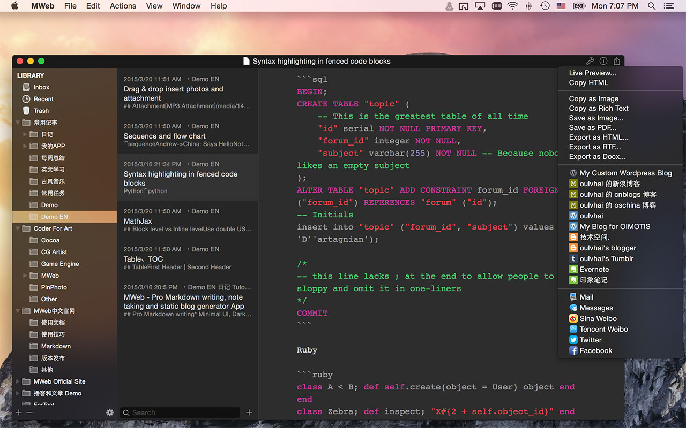
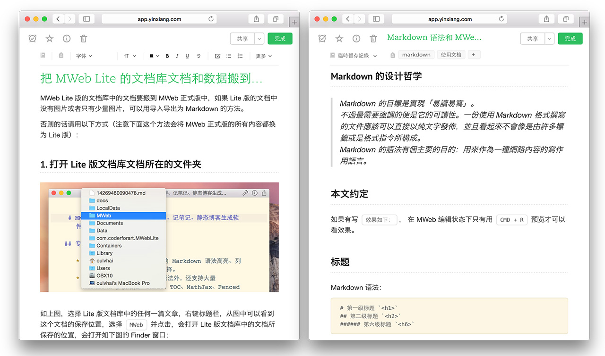
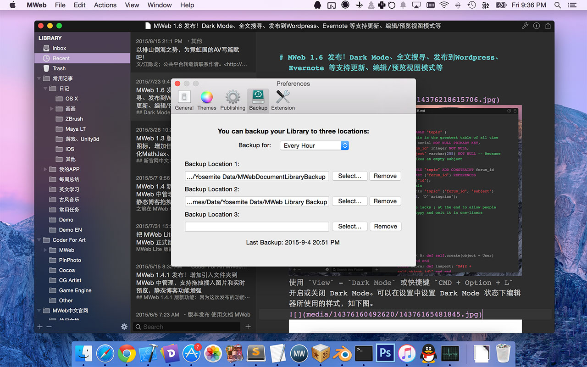

MWeb 1.7.1 版发布！支持导出为 RTF 和 Docx、发布到 Evernote 带样式、文档库备份和新网站主题等大量改进！
编辑器及发布服务改进
增加设置图片宽度和居左、居右、居中的语法。
如： 这样表示设置图片宽度为 450。其中 -w450 为设置语法，生成 HTML 时会自动移除。w 表示设置宽度，居左为：-l400，居右为 -r400，居中为 -c400，其中前面的 - 为可选，比如设置一图片宽度为 500 并居中：。
编辑器内显示的图片增加了右键菜单，右键图片即可查看图片大小、打开图片、复制图片。

增加导出为 RTF、Docx 和复制为富文本（Copy as Rich Text）功能。其中复制为富文本功能复制后，可以直接把格式化的内容粘贴到 mail 和 pages，带图片和格式。需要说明的是：导出为 Docx 功能目前并不带图片。

发布到 Evernote、印象笔记现在自带漂亮的默认样式。

icon 有所调整，看上去更舒服了点，界面的颜值也有所提升。
MWeb 从 1.7 版开始将自带不可改动的预览 CSS，方便日后优化和更新。目前自带有 5 种，名称都是以 mweb- 开头。
编辑器右键增加 Copy HTML 菜单项。
增加是否用空格替换 Tabs 选项（Insert spaces instead of tabs），在 Preferences - General 里可以设置。
增加编辑器行最大宽度设置（Editor Line Width），默认为 800，这个设置一般的 Markdown 编辑器都有，主要是全屏写作时，内容能居中，这样看上去会舒服点。 Preferences - Themes。
搜寻改进：当搜寻时，如果打开搜寻结果中的文档，会直接以搜寻的关键字查找打开的文档并高亮显示搜寻的关键字的位置。
文档库改进
文档库增加两个静态网站模版，分别为：mweb-medium-like 和 mweb-foundation-book。mweb-medium-like Demo 网址：http://coderforart.com/，使用说明：http://coderforart.com/mweb-medium-like-theme.html。mweb-foundation-book Demo 网址和使用说明：http://coderforart.com/objccndemo/
文档库增加备份功能，按狡兔三窟的原理，可以备份到三处地方，Preferences - Backup。

文档库现在支持把列表中的文档拖拽到左边的分类中以设置文档的分类。需要说明的是，这个功能也支持移除分类。比如说 A 文档设置了属于 MWeb 分类，如果想移除，可以再拖拽到 MWeb 这个分类，则会进行移除操作。
其他改进
外部模式现在支持拖拽移动子文件夹。
其他的一些小修正